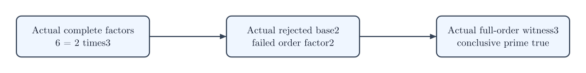
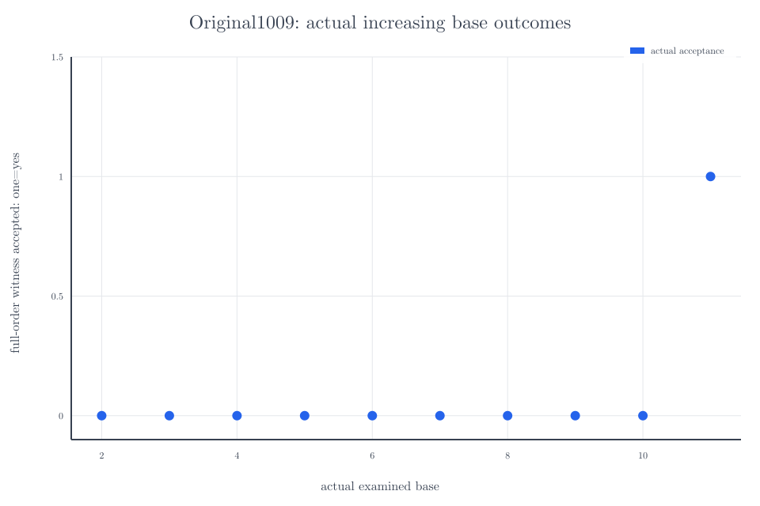
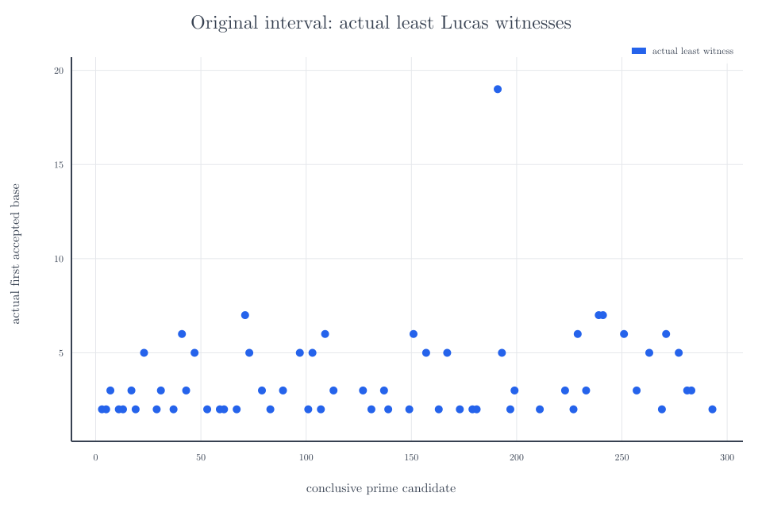
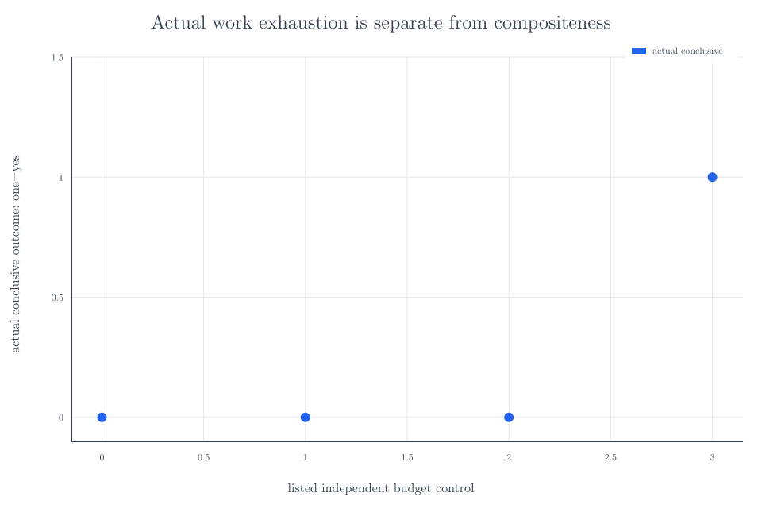

Lucas primality by exact multiplicative order
Abstract
A Fermat congruence alone does not certify primality. With the complete prime factorization of n-minus1, the Lucas order criterion adds proper-order checks that force an element to have order n-minus1 and hence prove n prime. We retain the original1009 witness and least-witness plot, move all factoring/search logic into the native library, and report bounded exhaustion separately from compositeness.
A hand-checkable order certificate for seven
Suppose n>2 and the complete distinct prime divisors of n−1 are known. If a(n−1)=1 modulo n, then a is a unit and its multiplicative order d divides n−1. If, for every prime q dividing n−1, a((n−1)/q) differs from1 modulo n, no prime factor can be removed from n−1 while remaining a multiple of d. Thus d=n−1. Since d divides the unit-group size phi(n), and phi(n)<=n−1 with equality only for prime n, the conditions prove primality. A failed proper-order check rejects that base, not the number. A failed Fermat congruence does prove compositeness.
For n=7, n−1=2*3. Base2 satisfies the Fermat congruence but its cube is1 modulo7, so it has insufficient order. Base3 has sixth power1, cube6 and square2 modulo7; both proper-order residues differ from1, giving an exact order-six certificate. The table/diagram show the native producer’s actual checks, with no report-local exponentiation or witness search.
#include <dm/dm.hpp>
int main() {
std::filesystem::create_directories("build");
auto t = dm::algorithms::lucas_primality_trace(7);
std::print("| actual base | factor0 means Fermat | actual exponent | actual residue | actual condition " "passed |\n| ---: | ---: | ---: | ---: | --- |\n");
for (auto &p : t.powers)
std::print("| {} | {} | {} | {} | {} |\n", p.base, p.factor, p.exponent,
p.residue, p.passed);
dm::graphics::Diagram d;
d.node("factor", {0, 0}, "Actual complete factors\n6 = 2 times3").node(
"reject", {6, 0},
std::format("Actual rejected base{}\nfailed order factor{}",
t.bases.front().base, t.bases.front().rejected_factor)).node("proof", {12, 0}, std::format("Actual full-order witness{}\nconclusive prime {}", t.analysis.witness, t.analysis.prime)).edge("factor", "reject").edge("reject", "proof");
d.save_svg("build/lucas_tiny.svg");
}| actual base | factor0 means Fermat | actual exponent | actual residue | actual condition passed |
|---|---|---|---|---|
| 2 | 0 | 6 | 1 | true |
| 2 | 2 | 3 | 1 | false |
| 3 | 0 | 6 | 1 | true |
| 3 | 2 | 3 | 6 | true |
| 3 | 3 | 2 | 2 | true |

Original1009 witness and1001 composite control
Retain n=1009, whose predecessor factors as1008=24*32*7. The actual least accepted witness is11. Its full-exponent residue is1, and the proper-order residues for q=2,3,7 are1008,374,935. The complete factorization and all actual base outcomes are native results. A separate1001=7*11*13 control produces a genuine Fermat failure and can stop immediately; continuing to try every remaining base would add work without changing its conclusive composite result.
All modular-power calls use the canonical full-width unsigned implementation with128-bit products. Trial division tests d<=remaining/d instead of forming a potentially overflowing d*d. Factoring n−1 is part of the algorithm’s actual cost and must finish before a Lucas prime certificate is possible.
#include <dm/dm.hpp>
int main() {
std::filesystem::create_directories("build");
auto t = dm::algorithms::lucas_primality_trace(1009);
std::print("| actual prime factor | actual extracted multiplicity |\n| ---: | ---: |\n");
for (auto &f : t.analysis.factors)
std::print("| {} | {} |\n", f.prime, f.exponent);
std::print("\n| actual base | Fermat passed | actual first rejected factor0 means none | actual " "accepted |\n| ---: | --- | ---: | --- |\n");
std::vector<double> x, y;
for (auto &a : t.bases) {
std::print("| {} | {} | {} | {} |\n", a.base, a.fermat_passed,
a.rejected_factor, a.accepted);
x.push_back(a.base);
y.push_back(a.accepted);
}
auto c = dm::algorithms::lucas_primality_analyze(1001);
std::print("\nActual1009 witness {}; actual powers {}; actual trial-divisor tests {};1001 conclusive " "{}; prime {}; Fermat-failing base {}.\n",
t.analysis.witness, t.analysis.work.powers,
t.analysis.work.trial_divisors, c.conclusive, c.prime,
c.composite_base);
auto p = dm::graphics::RPlot::create();
p.points(x, y, "actual acceptance", {37, 99, 235}, 6).y_limits(-.1, 1.5).title("Original1009: actual increasing base outcomes").x_label("actual examined base").y_label("full-order witness accepted: one=yes").save_svg("build/lucas_original.svg");
}| actual prime factor | actual extracted multiplicity |
|---|---|
| 2 | 4 |
| 3 | 2 |
| 7 | 1 |
| actual base | Fermat passed | actual first rejected factor0 means none | actual accepted |
|---|---|---|---|
| 2 | true | 2 | false |
| 3 | true | 2 | false |
| 4 | true | 2 | false |
| 5 | true | 2 | false |
| 6 | true | 2 | false |
| 7 | true | 2 | false |
| 8 | true | 2 | false |
| 9 | true | 2 | false |
| 10 | true | 2 | false |
| 11 | true | 0 | true |
Actual1009 witness 11; actual powers 22; actual trial-divisor tests 2;1001 conclusive true; prime false; Fermat-failing base 2.

Least accepted witnesses through three hundred
The original figure plotted the least primitive-root witness for each prime from3 through300. The native census now runs the actual bounded producer for every prescribed integer, then the report selects its conclusive prime results for presentation. No report-local primality sieve, trial factorization, modular exponentiation or duplicate smallest-witness search is used. The plotted witness is the actual first accepted base in increasing order, not an arbitrary successful base.
These observed small witnesses are a feature of this bounded interval, not a general small-witness guarantee. The special prime2 has witness sentinel1 and needs no factorization/search; it is explicitly excluded from the original3..300 plot.
#include <dm/dm.hpp>
int main() {
std::filesystem::create_directories("build");
auto census = dm::algorithms::lucas_primality_census(3, 300);
std::vector<double> x, y;
std::print("| actual conclusive prime | actual least accepted witness | actual examined bases | actual " "power calls |\n| ---: | ---: | ---: | ---: |\n");
for (auto &a : census)
if (a.conclusive && a.prime) {
std::print("| {} | {} | {} | {} |\n", a.n, a.witness, a.work.bases,
a.work.powers);
x.push_back(a.n);
y.push_back(a.witness);
}
auto p = dm::graphics::RPlot::create();
p.points(x, y, "actual least witness", {37, 99, 235}, 5).title(
"Original interval: actual least Lucas witnesses").x_label(
"conclusive prime candidate").y_label("actual first accepted base").save_svg("build/lucas_census.svg");
}| actual conclusive prime | actual least accepted witness | actual examined bases | actual power calls |
|---|---|---|---|
| 3 | 2 | 1 | 2 |
| 5 | 2 | 1 | 2 |
| 7 | 3 | 2 | 5 |
| 11 | 2 | 1 | 3 |
| 13 | 2 | 1 | 3 |
| 17 | 3 | 2 | 4 |
| 19 | 2 | 1 | 3 |
| 23 | 5 | 4 | 9 |
| 29 | 2 | 1 | 3 |
| 31 | 3 | 2 | 6 |
| 37 | 2 | 1 | 3 |
| 41 | 6 | 5 | 12 |
| 43 | 3 | 2 | 7 |
| 47 | 5 | 4 | 9 |
| 53 | 2 | 1 | 3 |
| 59 | 2 | 1 | 3 |
| 61 | 2 | 1 | 4 |
| 67 | 2 | 1 | 4 |
| 71 | 7 | 6 | 14 |
| 73 | 5 | 4 | 9 |
| 79 | 3 | 2 | 6 |
| 83 | 2 | 1 | 3 |
| 89 | 3 | 2 | 5 |
| 97 | 5 | 4 | 9 |
| 101 | 2 | 1 | 3 |
| 103 | 5 | 4 | 11 |
| 107 | 2 | 1 | 3 |
| 109 | 6 | 5 | 12 |
| 113 | 3 | 2 | 5 |
| 127 | 3 | 2 | 6 |
| 131 | 2 | 1 | 4 |
| 137 | 3 | 2 | 5 |
| 139 | 2 | 1 | 4 |
| 149 | 2 | 1 | 3 |
| 151 | 6 | 5 | 13 |
| 157 | 5 | 4 | 11 |
| 163 | 2 | 1 | 3 |
| 167 | 5 | 4 | 9 |
| 173 | 2 | 1 | 3 |
| 179 | 2 | 1 | 3 |
| 181 | 2 | 1 | 4 |
| 191 | 19 | 18 | 42 |
| 193 | 5 | 4 | 9 |
| 197 | 2 | 1 | 3 |
| 199 | 3 | 2 | 6 |
| 211 | 2 | 1 | 5 |
| 223 | 3 | 2 | 6 |
| 227 | 2 | 1 | 3 |
| 229 | 6 | 5 | 13 |
| 233 | 3 | 2 | 5 |
| 239 | 7 | 6 | 14 |
| 241 | 7 | 6 | 14 |
| 251 | 6 | 5 | 12 |
| 257 | 3 | 2 | 4 |
| 263 | 5 | 4 | 9 |
| 269 | 2 | 1 | 3 |
| 271 | 6 | 5 | 13 |
| 277 | 5 | 4 | 11 |
| 281 | 3 | 2 | 6 |
| 283 | 3 | 2 | 7 |
| 293 | 2 | 1 | 3 |

Explicitly inconclusive work limits
Trial division has worst-case O(sqrt(n)) candidate tests, and each examined base requests at most1+omega(n−1) modular powers, each with O(log(n)) exact modular products. A proof criterion should not be confused with an efficient discovery method. Two independent budgets limit actual divisor tests and actual examined bases; their exhaustion returns FactorBudget or BaseBudget with conclusive=false. A false prime flag on such an outcome is not a composite certificate. Zero work budgets mean no permitted work in that phase, not unlimited execution.
The ordinary bool method shares the producer with one million divisor tests and100000 bases, and throws on inconclusive exhaustion. This bounds previously unbounded work while preserving its conclusive mathematical booleans. Actual Fermat failures now stop immediately instead of scanning pointless later bases. The complete trace owns one candidate word plus each actual factor-removal, modular-power and base-outcome record; its optional million-record capture cap counts logical records before append, excluding fields, factor/result copies, capacities, runtime copies and bytes. Zero disables only that optional capture cap. Work-limit exhaustion returns the complete bounded history; capture-limit exhaustion throws rather than returning a misleading prefix.
The independent controls below use7 to separate partial factorization, completed factorization with no permitted base, one rejected base, and a complete certificate. They do not replay prefixes to build any trace. Inputs0/1 and even composites are conclusive by trivial filters;2 is conclusive prime without either work phase. Full unsigned arithmetic is checked by a separate2^61−1 native control, but no promise is made that every64-bit candidate can finish trial division within the default budget. No external dataset is relevant to this exact arithmetic study.
#include <dm/dm.hpp>
int main() {
std::filesystem::create_directories("build");
std::vector<double> x, y;
std::print("| independent divisor budget | independent base budget | actual stop enum | actual " "factorization complete | actual conclusive | actual prime | actual examined bases |\n| ---: " "| ---: | ---: | --- | --- | --- | ---: |\n");
std::size_t i = 0;
for (auto[divisors, bases] : std::vector<std::pair<std::size_t, std::size_t>>{{0, 100}, {100, 0}, {100, 1}, {100, 2}}) {
auto a = dm::algorithms::lucas_primality_analyze(7, divisors, bases);
std::print("| {} | {} | {} | {} | {} | {} | {} |\n", divisors, bases,
int(a.stop), a.factorization_complete, a.conclusive, a.prime,
a.work.bases);
x.push_back(i++);
y.push_back(a.conclusive);
}
auto large =
dm::algorithms::lucas_primality_analyze((std::uint64_t{1} << 61) - 1);
std::print("\nActual2-to61-minus1 conclusive {}; prime {}; witness {}; actual trial tests {}; actual " "powers {}.\n",
large.conclusive, large.prime, large.witness,
large.work.trial_divisors, large.work.powers);
auto p = dm::graphics::RPlot::create();
p.points(x, y, "actual conclusive", {37, 99, 235}, 6).y_limits(-.1, 1.5).title("Actual work exhaustion is separate from compositeness").x_label("listed independent budget control").y_label("actual conclusive outcome: one=yes").save_svg("build/lucas_budgets.svg");
}| independent divisor budget | independent base budget | actual stop enum | actual factorization complete | actual conclusive | actual prime | actual examined bases |
|---|---|---|---|---|---|---|
| 0 | 100 | 3 | false | false | false | 0 |
| 100 | 0 | 4 | true | false | false | 0 |
| 100 | 1 | 4 | true | false | false | 1 |
| 100 | 2 | 6 | true | true | true | 2 |
Actual2-to61-minus1 conclusive true; prime true; witness 37; actual trial tests 330; actual powers 119.

Verification and references
Native tests compare every candidate0..3000 with an independent trial-prime
reference, verify complete factor products and actual exact-removal states,
inspect every real power/base record and strict least-witness choice,
retain7/1009/1001 and the full-width2^61−1 control, and cover independent work
budgets, capture admission, trivial filters and census boundaries. The
ten-report batch passes 95 CTest cases, 30 directly instrumented ASan/UBSan
cases, 121 compiled and executed public examples, 601/601 scoped documentation
definitions and 11 representative hovers. Independent integer, Fraction, graph,
string and NumPy references verify 82,729 records, including the complete
original seeded LSH study. Frozen comparisons preserve ordinary legacy results;
malformed-input, sentinel-collision, ownership and explicit-budget corrections
are documented above. Thirteen checkout headers and thirteen installed headers
compile independently, and an installed-header native consumer links and runs.
Each complete report program runs against the checkout library; all four native
figures are reviewed and HTML/Markdown exports preserve computed results and
image bytes. Batch receipts: build/mepml-conversion/batch-214-223/.
V. R. Pratt(1975), Every Prime Has a Succinct Certificate, SIAM Journal on Computing4(3),214–220, presents primality proofs based on the complete predecessor factorization and multiplicative-order conditions. This implementation exposes the exact Lucas order evidence but does not build Pratt’s recursively succinct factor-primality proof tree; it discovers the factors by checked bounded trial division.